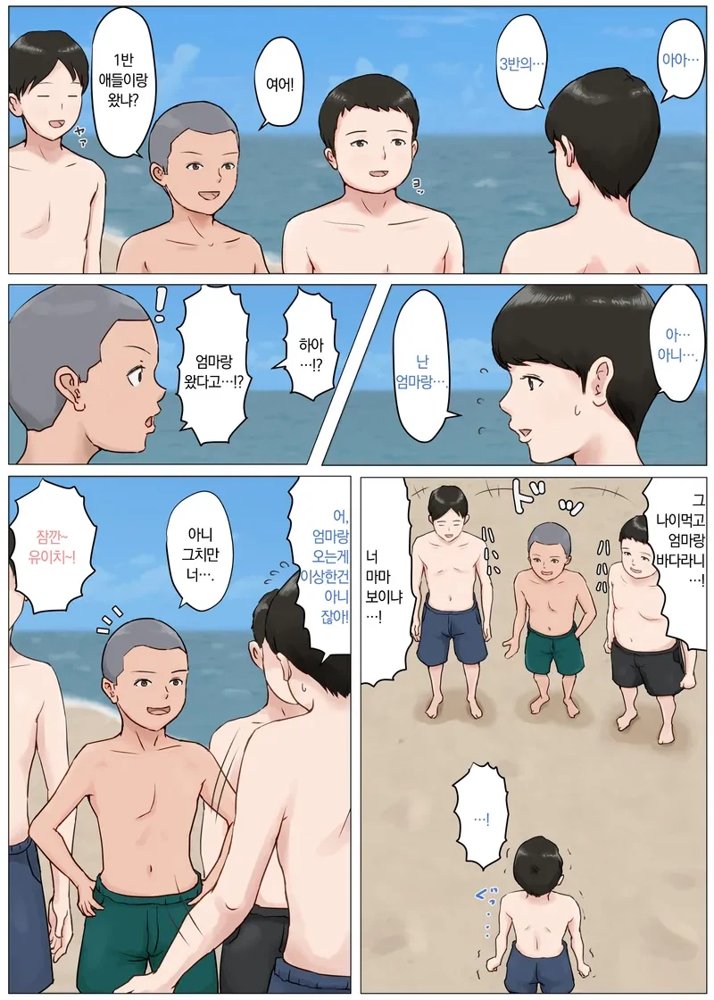
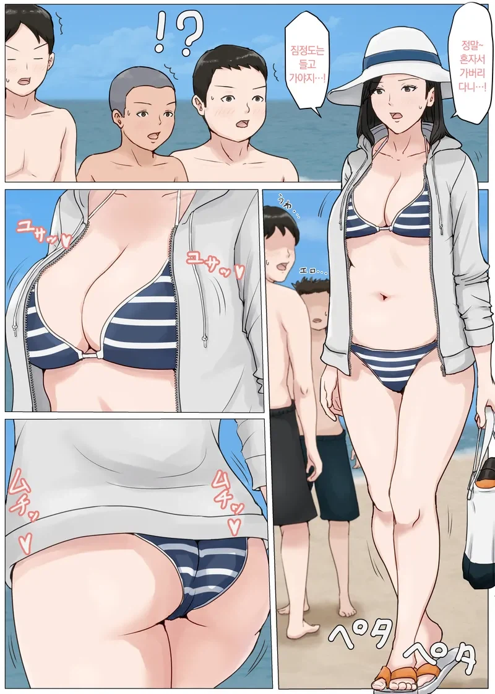

이거 명작이지
줌마가 힙업
어이어이 저게 엄마냐고 어이
빠박이 있으면 뭐다?
근친일껄?
도리.. 아니 번호가 필요합니다!! ㄷㄷ
초기작이랑 비교하면 갈수록 그림 깔끔해지고 좋음
ㄷㄷ
이작가 개꼴림
급함
걍 히토미에서 엄마테그로 검색하고 찾으면 금방 저 그림체 나와
🤙
번호
이거 애미없는 사람이 그린 애미랑하는거아냐
ㄹㅇ 혼자서 가버리면 안되지. 불효자야 아주
오후 12시 06분에 580호실 청소 좀 부탁 드릴게요
속보) 조철근 상병 임무중 순직으로 1206580계급 특진
이게 개웃기넼ㅋㅋㅋㅋㅋㅋㅋㅋㅋㅋㅋㅋ
제목
母さんじゃなきゃダメなんだっ!!
홀스테일 선생 제발 신작좀 내어주십시오
엄마좀 그만 그려
네토라레 그려!!
그러게 슴슴하자나 너무 끝은 ntr인것을
근친이냐 네토냐
슴가가 너무 작은데
네토보다 상남자근친이훨씬낫지 음음
사랑합니다
와 저런 궁뎅이 개좋아
안녕ㅎㅏ세요 누나♡